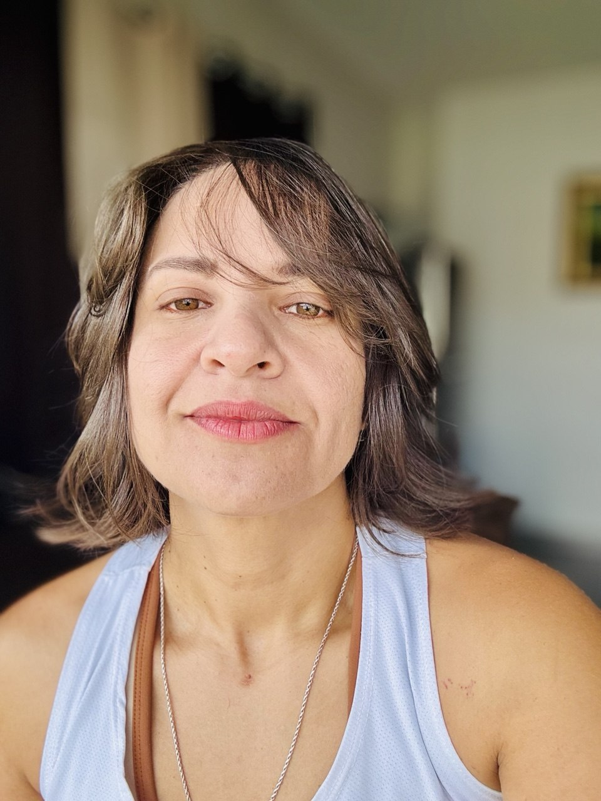

Atuação em vagas de Assistente de TI, Suporte Técnico, Help Desk, Análise de Sistemas e Consultoria ERP. Unindo sólida bagagem prática em infraestrutura, manutenção de hardware/software, instalação de sistemas e atendimento humanizado aos conhecimentos acadêmicos em Engenharia de Software.
Profissional com vivência consolidada em informática, suporte técnico e atendimento corporativo. Experiência na resolução de problemas (troubleshooting), configuração de redes locais, manutenção de computadores, suporte a usuários e implantação de softwares. Estudante de Engenharia de Software (PUC Goiás), com forte facilidade analítica e foco em otimização de processos e sistemas.
Montagem e Manutenção de Computadores | Promob | Adobe Photoshop | Web Designer | Mercado Digital 3D (3ds Max e Corona Renderer).